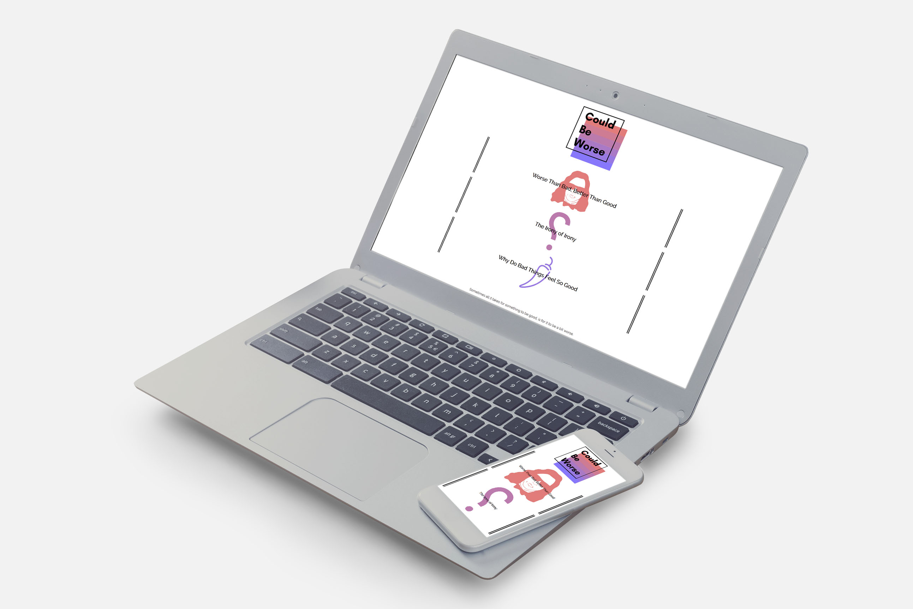

Client - Myself
Period - September 2018
Could Be Worse
An early project of mine, the goal was to create an online magazine, write the content for it, and make it responsive. The simplicity of the site was done to draw attention to the content, which in this case is the articles.
The bottom navigation was to remove unnecessary clutter along the page, and to make sure people read the articles before proceeding to the next one. Since there are only 3 articles written for the page, this concise navigation method means the site is easy to navigate.
Click here to view full site.